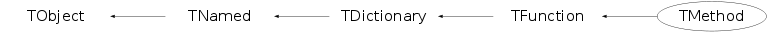

Function Members (Methods)
public:
| TMethod(const TMethod& org) | |
| TMethod(MethodInfo_t* info = 0, TClass* cl = 0) | |
| virtual | ~TMethod() |
| void | TObject::AbstractMethod(const char* method) const |
| virtual void | TObject::AppendPad(Option_t* option = "") |
| virtual void | TObject::Browse(TBrowser* b) |
| static TClass* | Class() |
| virtual const char* | TObject::ClassName() const |
| virtual void | TNamed::Clear(Option_t* option = "") |
| virtual TObject* | Clone(const char* newname = "") const |
| virtual Int_t | TNamed::Compare(const TObject* obj) const |
| virtual void | TNamed::Copy(TObject& named) const |
| virtual void | TObject::Delete(Option_t* option = "")MENU |
| virtual Int_t | TObject::DistancetoPrimitive(Int_t px, Int_t py) |
| virtual void | TObject::Draw(Option_t* option = "") |
| virtual void | TObject::DrawClass() constMENU |
| virtual TObject* | TObject::DrawClone(Option_t* option = "") constMENU |
| virtual void | TObject::Dump() constMENU |
| virtual void | TObject::Error(const char* method, const char* msgfmt) const |
| virtual void | TObject::Execute(const char* method, const char* params, Int_t* error = 0) |
| virtual void | TObject::Execute(TMethod* method, TObjArray* params, Int_t* error = 0) |
| virtual void | TObject::ExecuteEvent(Int_t event, Int_t px, Int_t py) |
| virtual void | TObject::Fatal(const char* method, const char* msgfmt) const |
| virtual void | TNamed::FillBuffer(char*& buffer) |
| virtual TDataMember* | FindDataMember() |
| virtual TObject* | TObject::FindObject(const char* name) const |
| virtual TObject* | TObject::FindObject(const TObject* obj) const |
| TClass* | GetClass() const |
| virtual const char* | GetCommentString() |
| static TDictionary* | TDictionary::GetDictionary(const char* name) |
| static TDictionary* | TDictionary::GetDictionary(const type_info& typeinfo) |
| virtual Option_t* | TObject::GetDrawOption() const |
| static Long_t | TObject::GetDtorOnly() |
| virtual const char* | TObject::GetIconName() const |
| virtual TList* | GetListOfMethodArgs() |
| virtual const char* | TFunction::GetMangledName() const |
| virtual const char* | TNamed::GetName() const |
| Int_t | TFunction::GetNargs() const |
| Int_t | TFunction::GetNargsOpt() const |
| virtual char* | TObject::GetObjectInfo(Int_t px, Int_t py) const |
| static Bool_t | TObject::GetObjectStat() |
| virtual Option_t* | TObject::GetOption() const |
| virtual const char* | TFunction::GetPrototype() const |
| const char* | TFunction::GetReturnTypeName() const |
| const char* | TFunction::GetSignature() |
| virtual const char* | Getter() const |
| virtual TMethodCall* | GetterMethod() |
| virtual const char* | TNamed::GetTitle() const |
| virtual UInt_t | TObject::GetUniqueID() const |
| virtual Bool_t | TObject::HandleTimer(TTimer* timer) |
| virtual ULong_t | TNamed::Hash() const |
| virtual void | TObject::Info(const char* method, const char* msgfmt) const |
| virtual Bool_t | TObject::InheritsFrom(const char* classname) const |
| virtual Bool_t | TObject::InheritsFrom(const TClass* cl) const |
| virtual void | TObject::Inspect() constMENU |
| void* | TFunction::InterfaceMethod() const |
| void | TObject::InvertBit(UInt_t f) |
| virtual TClass* | IsA() const |
| virtual Bool_t | TObject::IsEqual(const TObject* obj) const |
| virtual Bool_t | TObject::IsFolder() const |
| EMenuItemKind | IsMenuItem() const |
| Bool_t | TObject::IsOnHeap() const |
| virtual Bool_t | TNamed::IsSortable() const |
| Bool_t | TObject::IsZombie() const |
| virtual void | TNamed::ls(Option_t* option = "") const |
| void | TObject::MayNotUse(const char* method) const |
| virtual Bool_t | TObject::Notify() |
| void | TObject::Obsolete(const char* method, const char* asOfVers, const char* removedFromVers) const |
| static void | TObject::operator delete(void* ptr) |
| static void | TObject::operator delete(void* ptr, void* vp) |
| static void | TObject::operator delete[](void* ptr) |
| static void | TObject::operator delete[](void* ptr, void* vp) |
| void* | TObject::operator new(size_t sz) |
| void* | TObject::operator new(size_t sz, void* vp) |
| void* | TObject::operator new[](size_t sz) |
| void* | TObject::operator new[](size_t sz, void* vp) |
| TMethod& | operator=(const TMethod& rhs) |
| virtual void | TObject::Paint(Option_t* option = "") |
| virtual void | TObject::Pop() |
| virtual void | TNamed::Print(Option_t* option = "") const |
| virtual Long_t | TFunction::Property() const |
| virtual Int_t | TObject::Read(const char* name) |
| virtual void | TObject::RecursiveRemove(TObject* obj) |
| void | TObject::ResetBit(UInt_t f) |
| virtual void | TObject::SaveAs(const char* filename = "", Option_t* option = "") constMENU |
| virtual void | TObject::SavePrimitive(ostream& out, Option_t* option = "") |
| void | TObject::SetBit(UInt_t f) |
| void | TObject::SetBit(UInt_t f, Bool_t set) |
| virtual void | TObject::SetDrawOption(Option_t* option = "")MENU |
| static void | TObject::SetDtorOnly(void* obj) |
| virtual void | SetMenuItem(EMenuItemKind menuItem) |
| virtual void | TNamed::SetName(const char* name)MENU |
| virtual void | TNamed::SetNameTitle(const char* name, const char* title) |
| static void | TObject::SetObjectStat(Bool_t stat) |
| virtual TMethodCall* | SetterMethod() |
| virtual void | TNamed::SetTitle(const char* title = "")MENU |
| virtual void | TObject::SetUniqueID(UInt_t uid) |
| virtual void | ShowMembers(TMemberInspector& insp) |
| virtual Int_t | TNamed::Sizeof() const |
| virtual void | Streamer(TBuffer& b) |
| void | StreamerNVirtual(TBuffer& b) |
| virtual void | TObject::SysError(const char* method, const char* msgfmt) const |
| Bool_t | TObject::TestBit(UInt_t f) const |
| Int_t | TObject::TestBits(UInt_t f) const |
| virtual void | TObject::UseCurrentStyle() |
| virtual void | TObject::Warning(const char* method, const char* msgfmt) const |
| virtual Int_t | TObject::Write(const char* name = 0, Int_t option = 0, Int_t bufsize = 0) |
| virtual Int_t | TObject::Write(const char* name = 0, Int_t option = 0, Int_t bufsize = 0) const |
protected:
| virtual void | TObject::DoError(int level, const char* location, const char* fmt, va_list va) const |
| void | TObject::MakeZombie() |
private:
| virtual void | CreateSignature() |
Data Members
public:
| enum TDictionary::ESTLType { | kNone | |
| kVector | ||
| kList | ||
| kDeque | ||
| kMap | ||
| kMultimap | ||
| kSet | ||
| kMultiset | ||
| }; | ||
| enum TObject::EStatusBits { | kCanDelete | |
| kMustCleanup | ||
| kObjInCanvas | ||
| kIsReferenced | ||
| kHasUUID | ||
| kCannotPick | ||
| kNoContextMenu | ||
| kInvalidObject | ||
| }; | ||
| enum TObject::[unnamed] { | kIsOnHeap | |
| kNotDeleted | ||
| kZombie | ||
| kBitMask | ||
| kSingleKey | ||
| kOverwrite | ||
| kWriteDelete | ||
| }; |
protected:
| MethodInfo_t* | TFunction::fInfo | pointer to CINT function info |
| TString | TFunction::fMangledName | Mangled name as determined by CINT. |
| TList* | TFunction::fMethodArgs | list of function arguments |
| TString | TNamed::fName | object identifier |
| TString | TFunction::fSignature | string containing function signature |
| TString | TNamed::fTitle | object title |
private:
| TClass* | fClass | pointer to the class |
| TString | fGetter | state getter in case this is a *TOGGLE method |
| TMethodCall* | fGetterMethod | methodcall for state getter in case this is a *TOGGLE method |
| EMenuItemKind | fMenuItem | type of menuitem in context menu |
| TMethodCall* | fSetterMethod | methodcall for state setter in case this is a *TOGGLE method |
Class Charts
{kind=link}
{kind=link}
{kind=link}
{kind=link}

Function documentation
TMethod(MethodInfo_t* info = 0, TClass* cl = 0)
TDataMember * FindDataMember()
Tries to guess DataMember from comment string and Method's name <==(only if 1 Argument!). If more then one argument=> returns pointer to the last argument. It also sets MethodArgs' pointers to point to specified data members. The form of comment string defining arguments is: void XXX(Int_t x1, Float_t y2) //*ARGS={x1=>fX1,y2=>fY2} where fX1, fY2 are data fields in the same class. ("pointers" to data members)
TMethodCall * GetterMethod()
Return call environment for the getter method in case this is a *TOGGLE method (for the context menu).
TMethodCall * SetterMethod()
Return call environment for this method in case this is a *TOGGLE method which takes a single boolean or integer argument.
TList * GetListOfMethodArgs()
Returns methodarg list and additionally updates fDataMember in TMethod by calling FindDataMember();